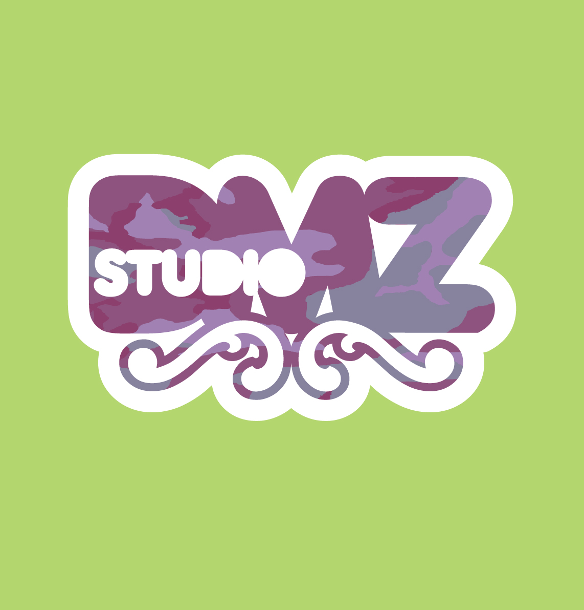

STUDIO
At the start of 2013, DMZ Studio moved its location when it joined forces with Miloco’s The Yard, to create a fantastic ProTools stereo & 5.1 mixing, post production, writing and mastering studio.
The Yard is located in the buzzing district of Islington, only one minute from Highbury & Islington station. DMZ Live has combined its own gear with Miloco's to create a great studio at a great price. It is based around a powerful 32 output ProTools HD6 Accel rig with a great selection of plug-ins. Monitoring is provided by Boxer T2 large speakers, NS10 Studios or Genelec 1031s. The console is a Digidesign C24 Console surface giving full interaction and control of our ProTools rig. It is the perfect console for quick recalls and with the built-in 5.1 monitoring makes it perfect for surround mixes. Add to this the TC System 6000 reverb unit and additional boutique outboard and you have everything you need for great quality mixing. For a full list of equipment, click here.
However, The Yard is not just a mixing studio. We can do additional post production work, such as any additional tuning, programming, mix, voice-over, audio editing for DVDs or other shoots & commercially master Live, TV or Studio audio.
If there is a need for any overdubs or additional playing, it is also an excellent recording or even writing space. There are a number of great mic pre's and compressors for recording through, a booth that is large enough to fit a drum kit and some great writing gear including a bass guitar, electric guitar, acoustic guitars, MS-10 synth, Moog Prodigy, Nord and other goodies.
It is all offered at a competitive price making DMZ’s The Yard a great choice of studio.